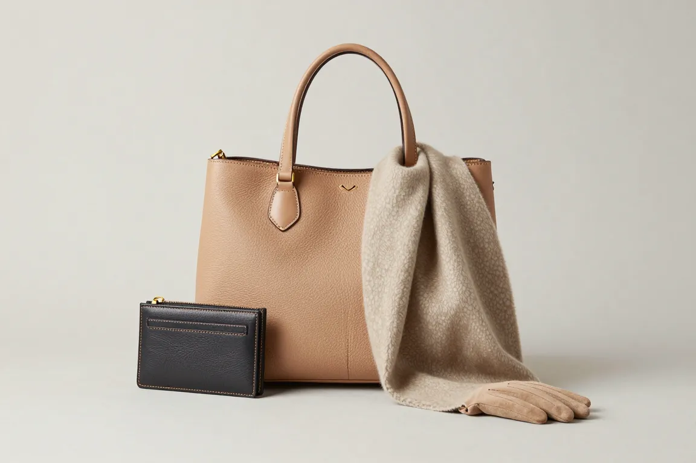

Простые аксессуары без знаков из лучшей кожи и кашемира: тоут без логотипа, тонкий кошелёк, шарф с необработанным краем. Цену прочтёт лишь тот, кто знает ткань, крой и стежок.

Главная идея
У настоящей роскоши нет знака: единственный признак — качество материала и работы.
Принципы дизайна
Уберите с внешней стороны любой логотип, плашку и принт.
Выбирайте лучшую выделку или тончайший кашемир, какие позволяет бюджет.
Кройте простую форму с одним-двумя швами.
Держите палитру в 4–6 нейтральных тонах: верблюжий, овсяный, угольный, тёмно-синий и чёрный.
Прошивайте вручную, 8–10 стежков на см, нитью в цвет кожи.
Оставляйте край необработанным, подвёрнутым или прокрашенным вручную, а не закрытым отделкой.
Берите фурнитуру из простой латуни или стали с матовой отделкой и без гравировки.